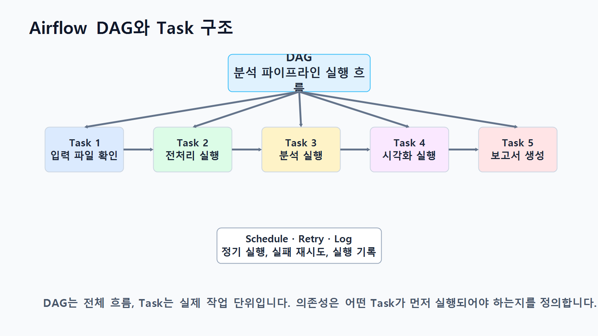
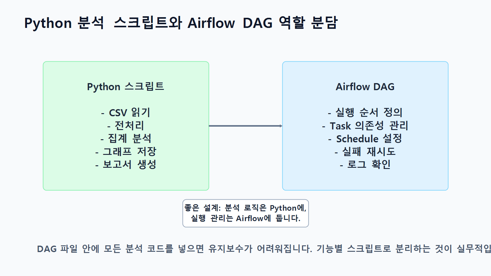
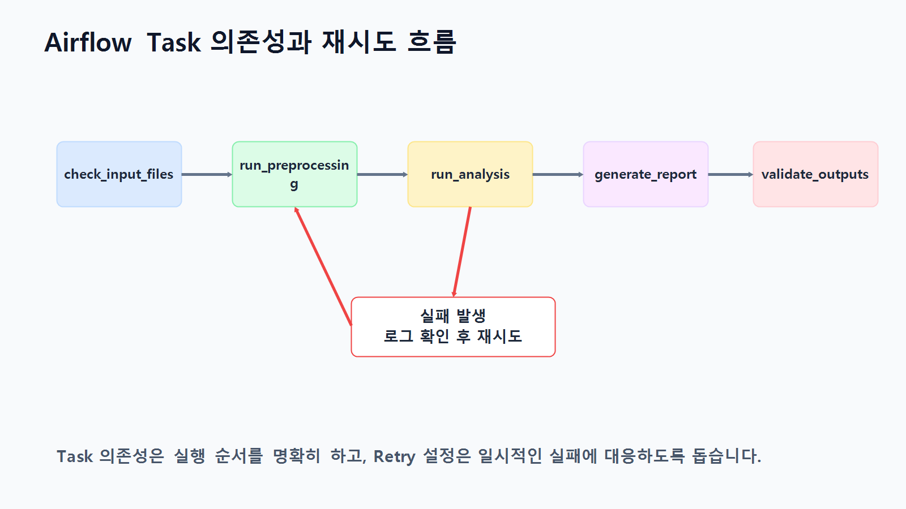
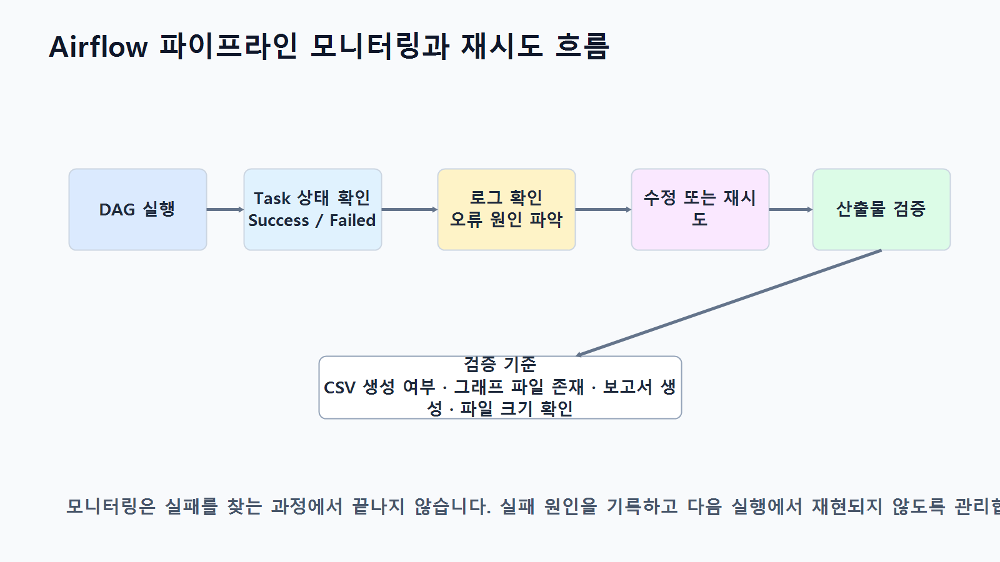

14장 Airflow 기반 데이터 분석 파이프라인
이 장에서는 여러 데이터 분석 단계를 정해진 순서대로 자동 실행하는 방법을 배웁니다. Airflow는 데이터 확인, 전처리, 분석, 시각화, 보고서 생성, 결과 파일 검증을 DAG와 Task로 묶어 관리할 수 있는 파이프라인 도구입니다.
이번 장의 핵심은 분석 로직은 Python 스크립트에 두고, 실행 순서와 운영 관리는 Airflow DAG에서 담당하도록 역할을 나누는 능력입니다.
수업 시간 구성
| 구성 | 권장 시간 |
|---|---|
| Airflow 기반 파이프라인 개념 이해 | 30분 |
| DAG, Task, Operator, Dependency 구조 이해 | 40분 |
| Python 분석 스크립트와 Airflow DAG 역할 분담 | 35분 |
| Task 의존성, Schedule, 실패 재시도 설정 | 45분 |
| 로그 확인과 결과 파일 검증 | 40분 |
| Make 보고서 발송 연계 구조 이해 | 30분 |
1. 학습 목표
- Airflow 기반 데이터 분석 파이프라인의 필요성을 설명할 수 있습니다.
- DAG, Task, Operator, Dependency, Schedule의 의미를 구분할 수 있습니다.
- Python 분석 스크립트와 Airflow DAG의 역할을 분리해 설계할 수 있습니다.
- Task 의존성, 실패 재시도, 로그 확인, 결과 파일 검증의 중요성을 설명할 수 있습니다.
- 필요 시 Make로 보고서 발송 자동화까지 확장할 수 있습니다.
2. 이번 장에서 만들 결과물
scripts/ch14_preprocessing.pyscripts/ch14_analysis.pyscripts/ch14_visualization.pyscripts/ch14_report.pydags/ch14_analysis_pipeline_dag.pyreports/ch14_airflow_report.mdreports/ch14_airflow_validation_log.csv

3. 핵심 개념
3.1 Airflow 기반 데이터 분석 파이프라인
Airflow 기반 데이터 분석 파이프라인은 원본 데이터 확인, 전처리, 분석, 시각화, 보고서 생성, 결과 검증을 하나의 실행 흐름으로 정의하는 방식입니다.
3.2 DAG, Task, Operator, Dependency, Schedule
| 개념 | 의미 | 예시 |
|---|---|---|
| DAG | 전체 작업 흐름 | 쇼핑몰 분석 파이프라인 |
| Task | DAG 안의 개별 실행 단위 | 전처리 실행, 보고서 생성 |
| Operator | Task 실행 방식 | BashOperator, PythonOperator |
| Dependency | Task 사이의 실행 순서 | 전처리 후 분석 실행 |
| Schedule | DAG 실행 주기 | 매일 실행, 수동 실행 |

3.3 Python 분석 스크립트와 Airflow DAG의 역할 분담
분석 로직은 scripts/ 폴더에 두고, Airflow DAG는 실행 순서, Schedule, 실패 재시도, 로그 확인, 상태 모니터링을 담당하도록 분리합니다.
| 영역 | Python 분석 스크립트 역할 | Airflow DAG 역할 |
|---|---|---|
| 전처리 | 결측치, 중복, 타입 처리 | 전처리 Task 실행 |
| 분석 | pandas 집계와 지표 계산 | 분석 Task 상태 관리 |
| 시각화 | 그래프 PNG 저장 | 시각화 Task 실행 |
| 보고서 | Markdown 보고서 생성 | 보고서 생성 후 검증 연결 |

3.4 Task 의존성과 실패 재시도
Task 의존성은 어떤 작업이 먼저 끝나야 다음 작업이 실행되는지를 의미합니다. 실패 재시도 설정은 일시적인 파일 접근 오류나 동기화 지연에 대응하는 데 도움이 됩니다.
check_input_files
→ run_preprocessing
→ run_analysis
→ generate_visualizations
→ generate_report
→ validate_outputs
3.5 로그 확인과 결과 파일 검증
Airflow의 장점은 실패한 Task의 로그를 확인하고 필요한 Task만 다시 실행할 수 있다는 점입니다. 마지막 단계에는 결과 파일 검증 Task를 두어 보고서, 그래프, 검증 로그가 정상 생성되었는지 확인합니다.

4. 실습 시나리오
data/raw/폴더에 원본 CSV 파일이 있는지 확인합니다.- 전처리 스크립트로 정제 데이터를 생성합니다.
- 분석 스크립트로 매출 지표를 계산합니다.
- 시각화 스크립트로 그래프 이미지를 생성합니다.
- 보고서 스크립트로 Markdown 보고서를 생성합니다.
validate_outputsTask에서 결과 파일을 검증합니다.- 필요 시 Make로 보고서 발송 단계를 연결합니다.
5. 실습 준비
5.1 권장 폴더 구조
llm-data-analysis-course/
dags/
ch14_analysis_pipeline_dag.py
data/
raw/
orders.csv
order_items.csv
products.csv
customers.csv
processed/
reports/
figures/
scripts/
ch14_preprocessing.py
ch14_analysis.py
ch14_visualization.py
ch14_report.py5.2 필요한 Python 패키지
pip install pandas matplotlib apache-airflow5.3 입력 데이터 확인 기준
| 파일 | 설명 | 필수 여부 |
|---|---|---|
orders.csv | 주문 기본 정보 | 필수 |
order_items.csv | 주문 상세 품목 | 필수 |
products.csv | 상품 정보 | 필수 |
customers.csv | 고객 정보 | 필수 |
6. Airflow DAG 설계
- DAG 파일은 실행 흐름을 정의하는 데 집중합니다.
- 데이터 분석 코드는 별도 Python 스크립트로 분리합니다.
- Task 이름은 실행 목적이 드러나도록 작성합니다.
- Task 의존성은 한 줄로 읽히게 구성합니다.
- 실패 재시도 횟수와 간격을 명시합니다.
- 마지막 단계에 결과 파일 검증 Task를 둡니다.
| Task ID | Operator | 역할 |
|---|---|---|
check_input_files | PythonOperator | 원본 CSV 파일 존재 여부 확인 |
run_preprocessing | BashOperator | 전처리 스크립트 실행 |
run_analysis | BashOperator | 분석 스크립트 실행 |
generate_visualizations | BashOperator | 시각화 스크립트 실행 |
generate_report | BashOperator | 보고서 생성 스크립트 실행 |
validate_outputs | PythonOperator | 결과 파일 존재 여부와 크기 검증 |
7. 실습 코드
7.1 전처리 스크립트
from pathlib import Path
import pandas as pd
BASE_DIR = Path(__file__).resolve().parents[1]
RAW_DIR = BASE_DIR / "data" / "raw"
PROCESSED_DIR = BASE_DIR / "data" / "processed"
PROCESSED_DIR.mkdir(parents=True, exist_ok=True)
orders = pd.read_csv(RAW_DIR / "orders.csv")
order_items = pd.read_csv(RAW_DIR / "order_items.csv")
products = pd.read_csv(RAW_DIR / "products.csv")
customers = pd.read_csv(RAW_DIR / "customers.csv")
orders["order_date"] = pd.to_datetime(orders["order_date"], errors="coerce")
orders = orders.dropna(subset=["order_id", "customer_id", "order_date"])
order_items = order_items.dropna(subset=["order_id", "product_id", "quantity", "price"])
orders.to_csv(PROCESSED_DIR / "orders_clean.csv", index=False)
order_items.to_csv(PROCESSED_DIR / "order_items_clean.csv", index=False)
products.to_csv(PROCESSED_DIR / "products_clean.csv", index=False)
customers.to_csv(PROCESSED_DIR / "customers_clean.csv", index=False)7.2 분석 스크립트
from pathlib import Path
import pandas as pd
BASE_DIR = Path(__file__).resolve().parents[1]
PROCESSED_DIR = BASE_DIR / "data" / "processed"
REPORT_DIR = BASE_DIR / "reports"
REPORT_DIR.mkdir(parents=True, exist_ok=True)
orders = pd.read_csv(PROCESSED_DIR / "orders_clean.csv", parse_dates=["order_date"])
order_items = pd.read_csv(PROCESSED_DIR / "order_items_clean.csv")
order_items["sales"] = order_items["quantity"] * order_items["price"]
merged = order_items.merge(orders[["order_id", "order_date"]], on="order_id", how="left")
daily_sales = (
merged.assign(order_day=merged["order_date"].dt.date)
.groupby("order_day", as_index=False)["sales"]
.sum()
.sort_values("order_day")
)
daily_sales.to_csv(REPORT_DIR / "ch14_daily_sales.csv", index=False)7.3 Airflow DAG 코드
from airflow import DAG
from airflow.operators.bash import BashOperator
from airflow.operators.python import PythonOperator
from datetime import datetime, timedelta
from pathlib import Path
import csv
BASE_DIR = Path("/opt/airflow")
DATA_DIR = BASE_DIR / "data"
RAW_DIR = DATA_DIR / "raw"
REPORT_DIR = BASE_DIR / "reports"
FIGURE_DIR = REPORT_DIR / "figures"
REQUIRED_INPUT_FILES = [
RAW_DIR / "orders.csv",
RAW_DIR / "order_items.csv",
RAW_DIR / "products.csv",
RAW_DIR / "customers.csv",
]
REQUIRED_OUTPUT_FILES = [
REPORT_DIR / "ch14_daily_sales.csv",
REPORT_DIR / "ch14_airflow_report.md",
FIGURE_DIR / "ch14_daily_sales.png",
]
default_args = {
"owner": "data-analysis-class",
"depends_on_past": False,
"retries": 2,
"retry_delay": timedelta(minutes=5),
}
def _check_input_files():
missing_files = [str(path) for path in REQUIRED_INPUT_FILES if not path.exists()]
if missing_files:
raise FileNotFoundError("입력 파일이 없습니다: " + ", ".join(missing_files))
print("입력 파일 확인 완료")
def _validate_outputs():
validation_rows = []
for path in REQUIRED_OUTPUT_FILES:
exists = path.exists()
size = path.stat().st_size if exists else 0
validation_rows.append({
"file": str(path),
"exists": exists,
"size": size,
"status": "ok" if exists and size > 0 else "error",
})
REPORT_DIR.mkdir(parents=True, exist_ok=True)
log_path = REPORT_DIR / "ch14_airflow_validation_log.csv"
with log_path.open("w", newline="", encoding="utf-8") as f:
writer = csv.DictWriter(f, fieldnames=["file", "exists", "size", "status"])
writer.writeheader()
writer.writerows(validation_rows)
failed = [row["file"] for row in validation_rows if row["status"] != "ok"]
if failed:
raise RuntimeError("결과 파일 검증 실패: " + ", ".join(failed))
with DAG(
dag_id="ch14_airflow_analysis_pipeline",
description="Chapter 14 Airflow 기반 데이터 분석 파이프라인",
start_date=datetime(2026, 1, 1),
schedule="@daily",
catchup=False,
default_args=default_args,
tags=["chapter14", "data-analysis", "airflow"],
) as dag:
check_input_files = PythonOperator(
task_id="check_input_files",
python_callable=_check_input_files,
)
run_preprocessing = BashOperator(
task_id="run_preprocessing",
bash_command="python /opt/airflow/scripts/ch14_preprocessing.py",
)
run_analysis = BashOperator(
task_id="run_analysis",
bash_command="python /opt/airflow/scripts/ch14_analysis.py",
)
generate_visualizations = BashOperator(
task_id="generate_visualizations",
bash_command="python /opt/airflow/scripts/ch14_visualization.py",
)
generate_report = BashOperator(
task_id="generate_report",
bash_command="python /opt/airflow/scripts/ch14_report.py",
)
validate_outputs = PythonOperator(
task_id="validate_outputs",
python_callable=_validate_outputs,
)
check_input_files >> run_preprocessing >> run_analysis >> generate_visualizations >> generate_report >> validate_outputsTask 의존성은 다음 한 줄로 정의됩니다.
check_input_files >> run_preprocessing >> run_analysis >> generate_visualizations >> generate_report >> validate_outputs8. LLM 활용 프롬프트
온라인 쇼핑몰 주문 데이터를 매일 분석하는 Airflow DAG를 설계하려고 합니다.
입력 파일:
- orders.csv
- order_items.csv
- products.csv
- customers.csv
필요한 작업:
- 입력 파일 확인
- 데이터 전처리
- 매출 분석
- 시각화 생성
- Markdown 보고서 생성
- 결과 파일 검증
요구사항:
- DAG, Task, Operator, Dependency, Schedule 개념이 드러나게 설계해 주세요.
- Python 분석 스크립트와 Airflow DAG의 역할을 분리해 주세요.
- 실패 재시도와 로그 확인 관점을 포함해 주세요.
- 마지막에는 Make로 보고서 발송을 연결할 수 있는 구조도 제안해 주세요.9. 결과 해석
| 확인 항목 | 확인 방법 | 해석 기준 |
|---|---|---|
| DAG 실행 상태 | Airflow UI의 DAG Runs | 전체 실행 성공 또는 실패 확인 |
| Task 상태 | Graph 또는 Grid 화면 | 어느 단계에서 실패했는지 확인 |
| 로그 | 실패 Task의 Log 메뉴 | 파일 경로, 컬럼명, 권한 오류 확인 |
| 결과 CSV | reports/ch14_daily_sales.csv | 행 수와 주요 값 확인 |
| 검증 로그 | ch14_airflow_validation_log.csv | 필수 산출물 존재 여부 확인 |
10. 실무 적용 포인트
- DAG는 너무 복잡하게 만들지 말고 업무 단위로 분리합니다.
- 분석 스크립트는 Airflow 밖에서도 단독 실행 가능해야 합니다.
- 입력 데이터, 중간 산출물, 최종 산출물 경로를 명확히 분리합니다.
- 모든 Task는 실패 시 원인을 로그로 남기도록 작성합니다.
- 결과 파일 검증 없이 보고서 발송 단계로 넘어가지 않도록 합니다.
- 보고서 발송, Slack 알림, Google Sheets 기록은 필요 시 Make와 연결합니다.
11. 연습 문제
- DAG, Task, Operator, Dependency, Schedule의 의미를 한 문장씩 설명해 보세요.
check_input_filesTask가 가장 먼저 실행되어야 하는 이유를 설명해 보세요.- BashOperator와 PythonOperator의 차이를 정리해 보세요.
- 결과 파일 검증 Task에서 확인해야 할 항목을 5개 이상 작성해 보세요.
- Make로 보고서를 발송하기 전에 확인해야 할 조건을 표로 정리해 보세요.
12. 정리
- Airflow 기반 데이터 분석 파이프라인은 여러 분석 작업을 정해진 순서로 자동 실행하는 구조입니다.
- DAG는 전체 흐름이고, Task는 개별 실행 단계입니다.
- Operator는 Task 실행 방식을 정의하고, Dependency는 실행 순서를 정의합니다.
- Schedule은 DAG가 언제 실행될지를 정합니다.
- Python 분석 스크립트와 Airflow DAG는 역할을 분리하는 것이 좋습니다.
- 실패 재시도, 로그 확인, 결과 파일 검증은 실무 운영에서 매우 중요합니다.
- 필요 시 Make와 연결하면 보고서 발송, 알림, 실행 로그 기록까지 자동화할 수 있습니다.